._National_Archaeological_Museum,_Athens.jpg){kind=link}


.jpg){kind=link}


Athens
Electra Palace Athens
Located in the Plaka district of Athens, this hotel offers rooms and suites, indoor and seasonal outdoor pools, and a rooftop restaurant overlooking the Acropolis.
Check roomsOfficial hotel website · opens in a new tab
Europe / A place to get to know
Ancient stones, island coves and tables made for sharing
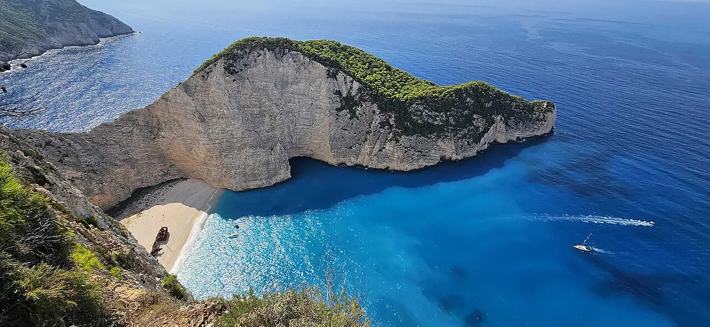
Welcome to Greece
Greece places ancient sanctuaries within a landscape of mountains, islands and coastlines. Athens brings the story close, with archaeological sites, neighborhood streets and museum collections around the Acropolis.
Explore a little further
Landmarks, landscapes and the stories behind them. Select a photograph for a closer look.
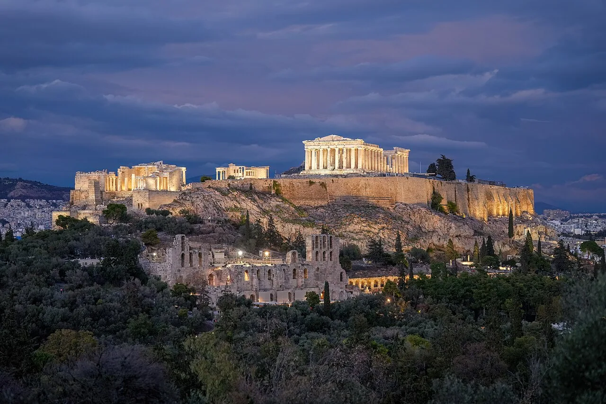
Athena's ancient sanctuary crowns a rocky hill above central Athens. The Parthenon, Erechtheion and monumental gateways reveal the scale and craftsmanship of the city's classical building program.
Giles Laurent · CC BY-SA 4.0 . Resized as needed and converted to WebP. No crop.
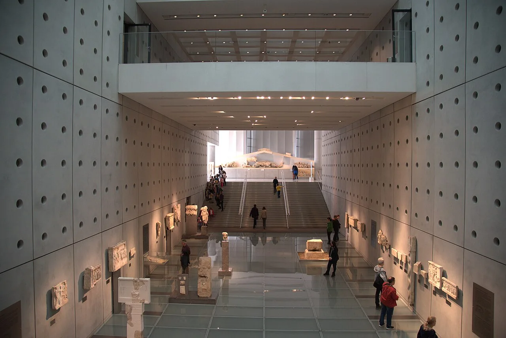
Built to display finds from the Acropolis and its slopes, this museum places ancient sculpture in a contemporary setting. Glass floors reveal archaeological remains beneath the building.
Bandelmug · CC BY 4.0 . Resized as needed and converted to WebP. No crop.
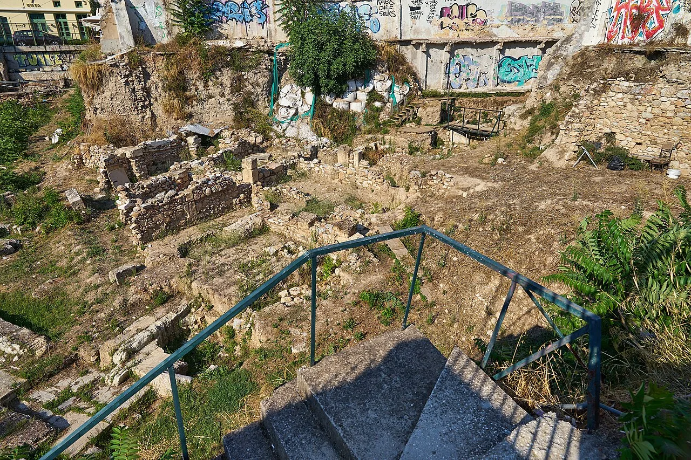
The Agora was a center of public life, trade and political discussion in ancient Athens. Its archaeological landscape includes the Temple of Hephaestus and the reconstructed Stoa of Attalos.
George E. Koronaios · CC0 . Resized as needed and converted to WebP. No crop.
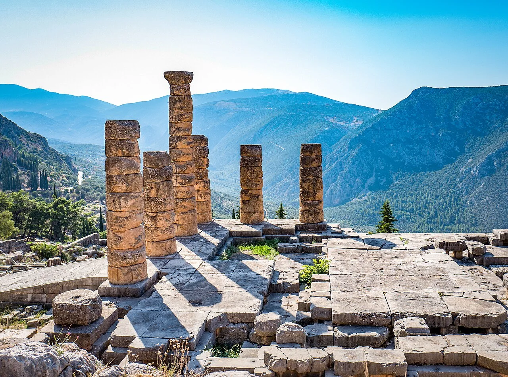
On the slopes of Mount Parnassus, Delphi was a sanctuary of Apollo and the seat of his oracle. Temple remains, treasuries and a theater occupy the mountain landscape.
Skyring · CC BY-SA 4.0 . Resized as needed and converted to WebP. No crop.
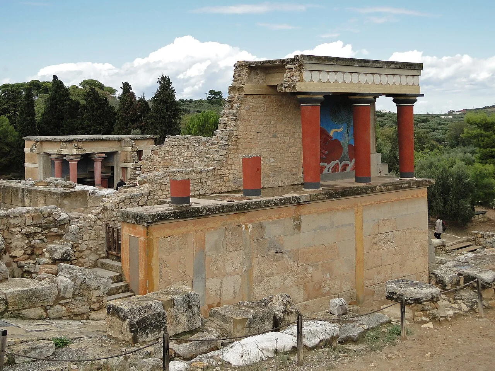
Near Heraklion on Crete, Knossos preserves a major Minoan palace complex. Courtyards, storerooms and reconstructed spaces connect archaeology with the myths of Minos, the Labyrinth and the Minotaur.
Bernard Gagnon · CC BY-SA 3.0 . Resized as needed and converted to WebP. No crop.
Explore a little further
Athens connects ancient sculpture with a continuing performance tradition around the Odeon of Herodes Atticus. The National Archaeological Museum and Museum of Cycladic Art reveal different chapters of Greek art.
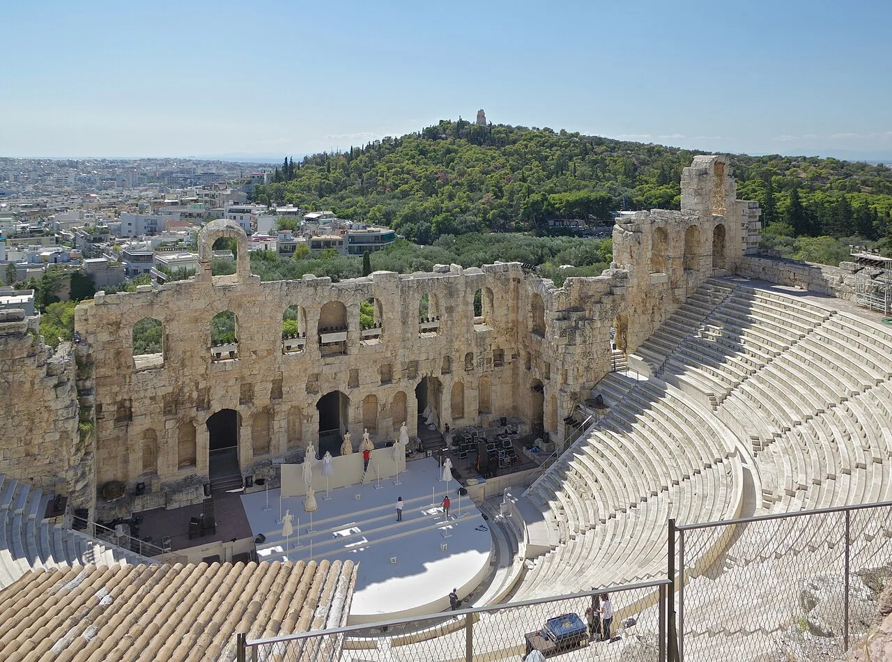
Odeon of Herodes Atticus
Berthold Werner · CC BY-SA 3.0 . Resized as needed and converted to WebP. No crop.
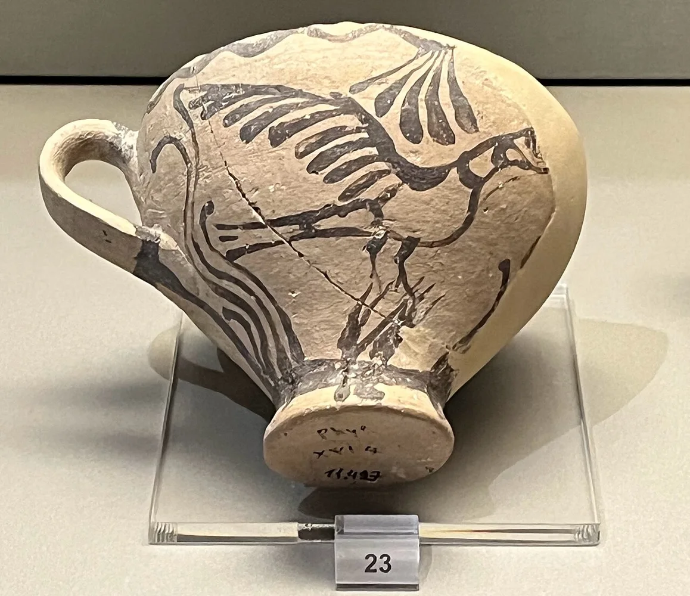
National Archaeological Museum, Athens
Groselopez · CC0 . Resized as needed and converted to WebP. No crop.
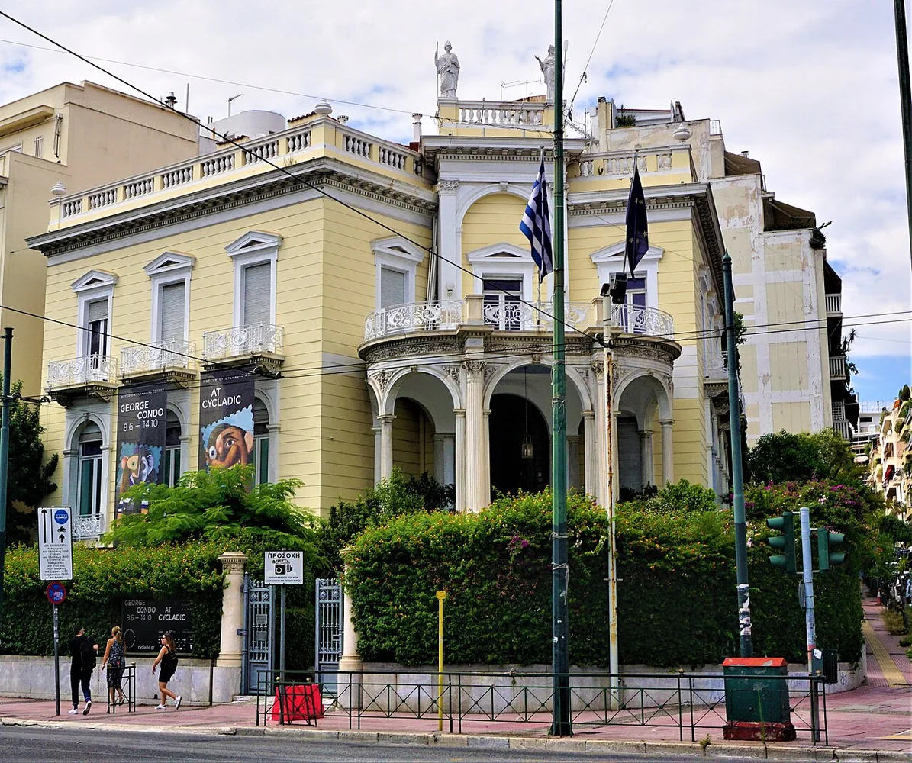
Museum of Cycladic Art
Joyofmuseums · CC BY-SA 4.0 . Resized as needed and converted to WebP. No crop.
Explore a little further
Greek cooking makes generous use of vegetables, olive oil, herbs and cheese, alongside grilled meats and honey-sweetened pastries.
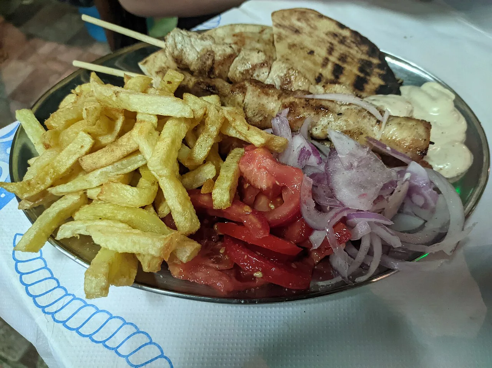
Small pieces of grilled meat are served on skewers or wrapped in pita with accompaniments such as tomato, onion and tzatziki.
Leeturtle · CC BY-SA 4.0 . Resized as needed and converted to WebP. No crop.
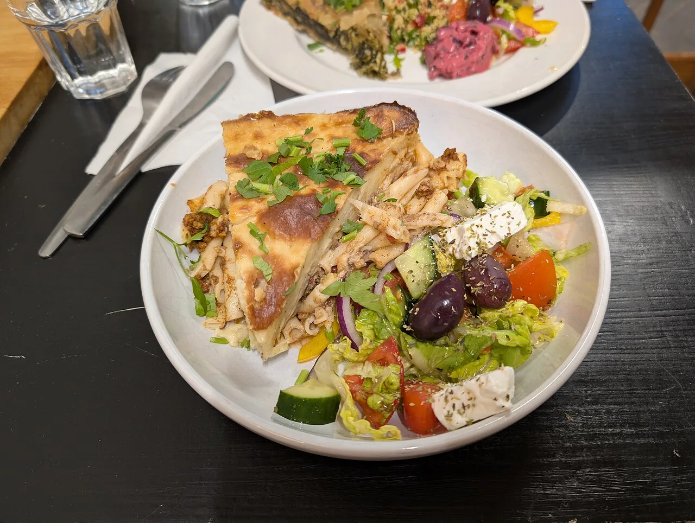
Horiatiki combines tomatoes, cucumber, onion, olives and feta with olive oil and oregano.
Andy Li · CC0 . Resized as needed and converted to WebP. No crop.
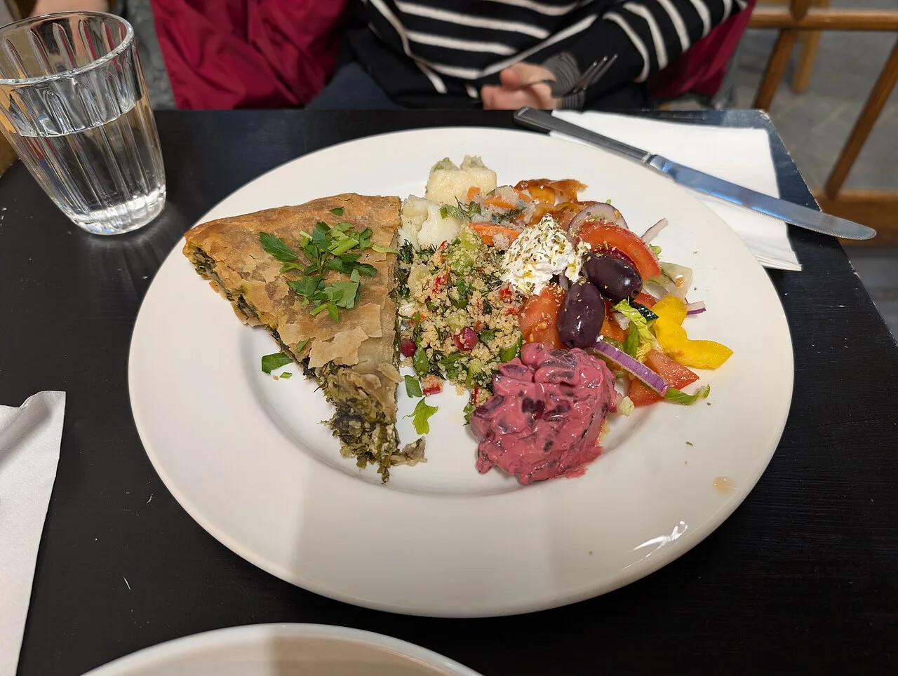
This savory pie layers spinach, herbs and often feta cheese inside crisp filo pastry.
Andy Li · CC0 . Resized as needed and converted to WebP. No crop.
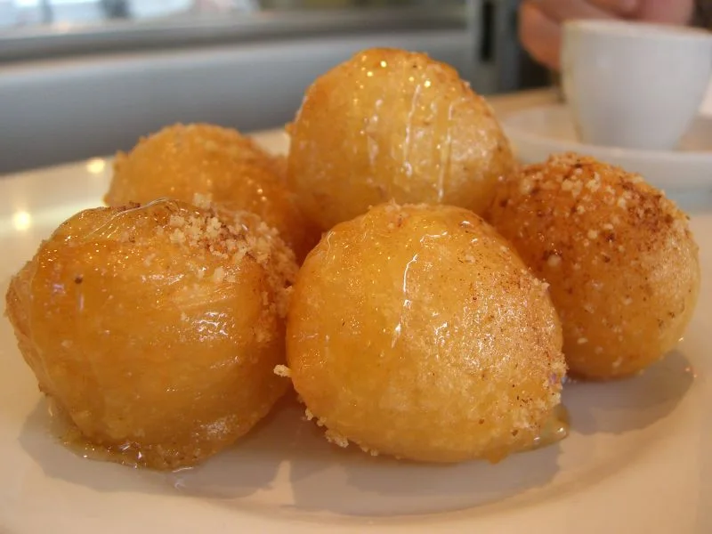
These small fried dough puffs are traditionally drizzled with honey and sprinkled with cinnamon.
Flickr.com user "avlxyz" · CC BY-SA 2.0 . Resized as needed and converted to WebP. No crop.
Explore a little further
Explore Athens's historic neighborhoods and hilltop views, or discover the coastal landscapes of the Ionian islands.
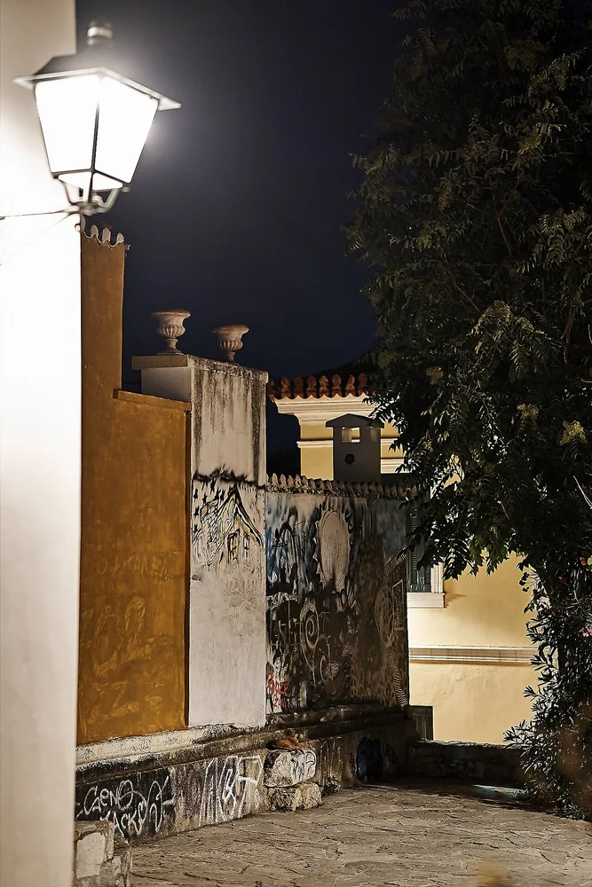
Walk the narrow streets below the Acropolis, looking for neoclassical houses, small churches, shops and café terraces in one of Athens's oldest neighborhoods.
George E. Koronaios · CC BY-SA 4.0 . Resized as needed and converted to WebP. No crop.
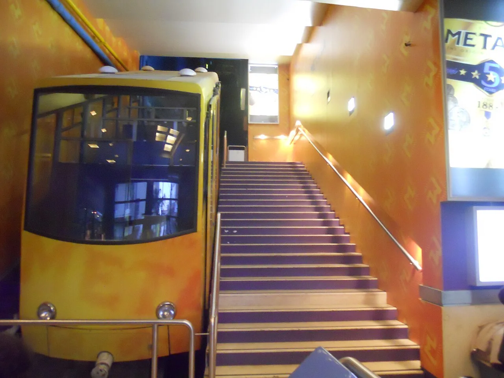
Use the funicular to reach the upper part of Lycabettus Hill and take in views across Athens toward the Acropolis and the sea.
Erik Drost · CC BY 2.0 . Resized as needed and converted to WebP. No crop.
Photograph Zakynthos's limestone cove and shipwreck from permitted viewing areas or authorized boat routes; the official tourism site currently states that beach landings are prohibited.
Andrzej Rękas · CC BY-SA 4.0 . Resized as needed and converted to WebP. No crop.
Explore a little further
Monastiraki and Gazi bring together cafés, bars and music venues, with the illuminated Acropolis forming a backdrop to central Athens.
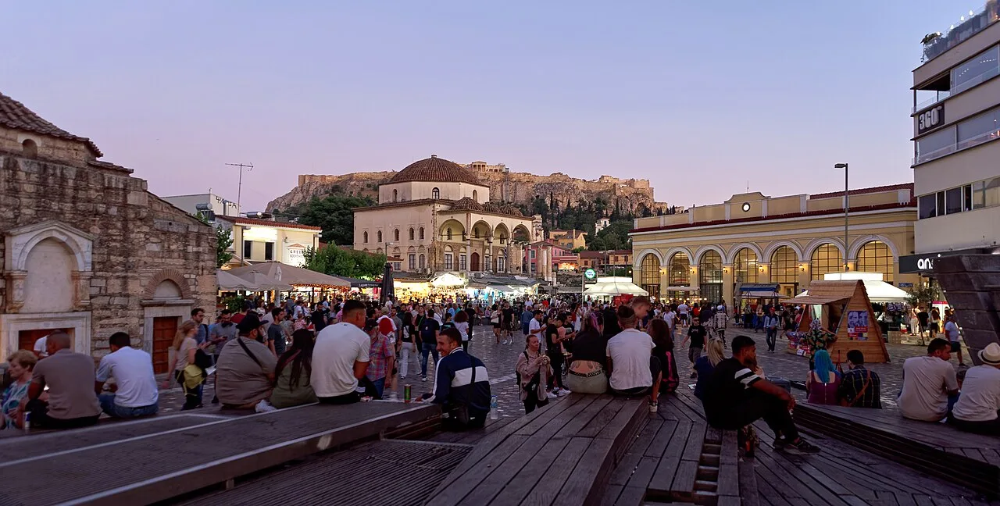
Monastiraki Square
Jakub Hałun · CC BY 4.0 . Resized as needed and converted to WebP. No crop.
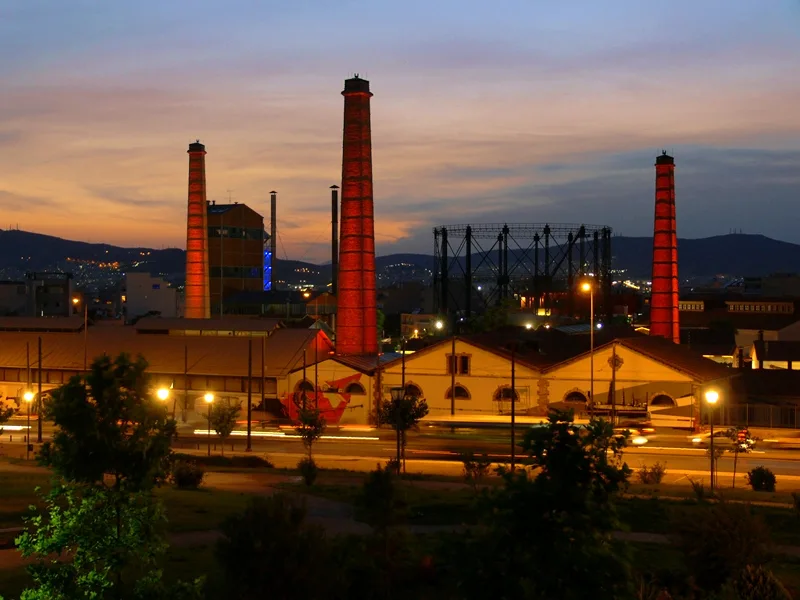
Gazi, Athens
G Da · CC BY-SA 3.0 . Resized as needed and converted to WebP. No crop.
Explore a little further
A country overview with selected attraction markers. Use local transport information to plan the route between regions.
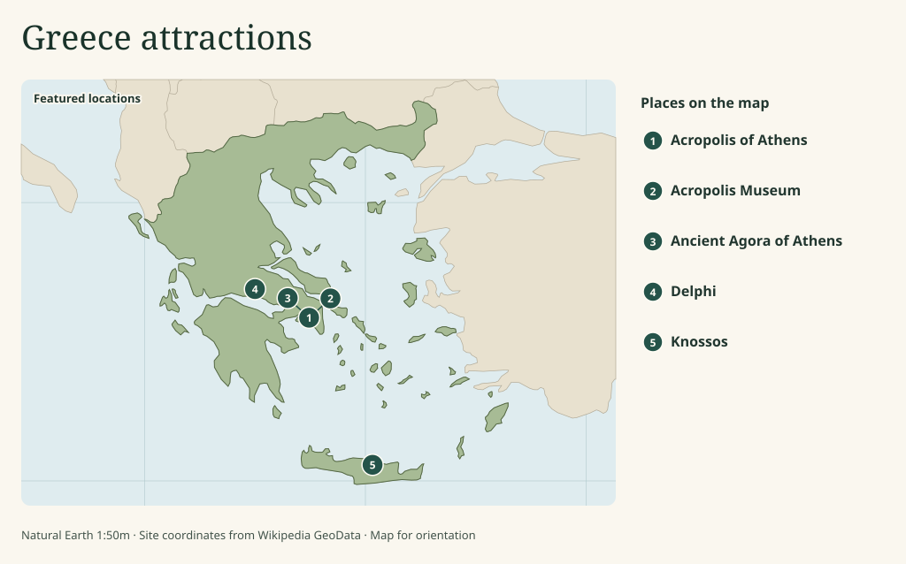
Illustrative overview. Marker locations and map sources are documented below.
A place to settle in
Two places to consider for your trip. Check room choices, current prices and availability directly with each hotel.
Athens
Located in the Plaka district of Athens, this hotel offers rooms and suites, indoor and seasonal outdoor pools, and a rooftop restaurant overlooking the Acropolis.
Check roomsOfficial hotel website · opens in a new tab
Athens
An Athens hotel near the Acropolis Museum, with 90 guest rooms, restaurants, a bar, and a roof garden featuring views toward the Acropolis archaeological site.
Check roomsOfficial hotel website · opens in a new tab
The hotel sets its prices, booking terms and payment currency. Some properties confirm reservations after an enquiry.
Know your money
Get familiar with the local currency and estimate what an amount in your own currency is worth.
Daily reference Rates By Exchange Rate API . The rate date appears with your estimate.
Morning to evening · Greece
Giles Laurent · CC BY-SA 4.0 . Resized as needed and converted to WebP. No crop.
George E. Koronaios · CC0 . Resized as needed and converted to WebP. No crop.
Jakub Hałun · CC BY 4.0 . Resized as needed and converted to WebP. No crop.
Suggested order and approximate times, with breaks for meals and travel. Confirm access, reservations, transport and operating hours locally. Evening photographs do not guarantee an event or performance.
Confirm arrangements with the official visitor resource .
Visitor resource: https://www.visitgreece.gr/en
Guide: Atlas & Away · Greece · researched 18 November 2026.
Explore a little further
A starter in Greek. The pronunciation hints are approximate; listen to local speakers and ask politely when unsure.
| Phrase | Meaning | Say it approximately |
|---|---|---|
| Καλημέρα | Good morning | kah-lee-MEH-rah |
| Παρακαλώ | Please | pah-rah-kah-LOH |
| Ευχαριστώ | Thank you | ef-hah-ree-STOH |
| Μιλάτε αγγλικά; | Do you speak English? | mee-LAH-teh ang-glee-KAH |
| Πού είναι η τουαλέτα; | Where is the restroom? | poo EE-neh ee too-ah-LEH-tah |
A little preparation
0 of 4 preparations complete
Saved places and checklists use this browser’s local storage. They are not an account or a booking.
Before you go
The example itinerary stays around Athens. The full country guide covers several regions; allow extra days and transport for places beyond that route.
Use the Hotels section to open a property’s official website and check rooms, prices and booking terms. You complete any reservation and payment with the hotel.
Open the enquiry page or email profannan712@gmail.com .
Guide researched on 18 November 2026. Text and code were developed with ChatGPT/Codex assistance for this student learning project.
Phrase reference: Greek phrasebook .
Natural Earth (base data), ChatGPT in Codex (map design) · Public-domain Natural Earth base data . Projected Natural Earth boundaries, added labels and site markers, and exported SVG.